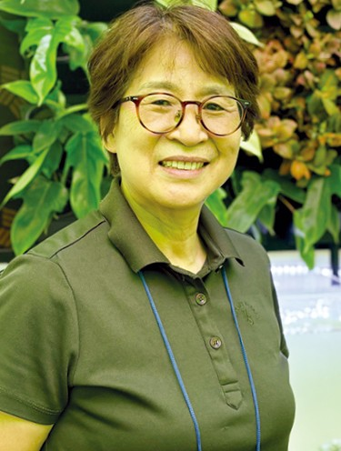

기업 비전
우리는 기술로 농업의 가치를 더합니다.
🌱
Value Creation
고부가가치 종묘 생산을 통한
농가 소득 증대 기여
🔬
Technical Innovation
첨단 조직배양 기술 및
스마트팜 솔루션 고도화
🌍
Global Standard
국내를 넘어 글로벌 시장으로
나아가는 K-농업의 주역
기업 가치
Smart Farming, Better Life

대표 윤여중
주요 경력
- 농업회사법인 ㈜유니플랜텍 설립 ~ 현재
- 충북대학교 첨단원예기술개발연구센터 근무
- 농진종묘 육종연구소 근무
- 농촌진흥청 국립원예특작과학원 십자화과 근무
학력 사항
- 농학박사 : 충북대학교 원예학과
- 농학석사 : 전북대학교 원예학과
주요 대외 활동
- 우즈베키스탄 사마르칸트 씨감자 생산 및 증식시스템 역량강화 사업 조직배양 전문가
- 농촌진흥청 국립원예특작과학원 현장명예연구관

CEO MESSAGE
"지속 가능한 미래 농업,
"지속 가능한 미래 농업,
유니플랜텍이 앞장서겠습니다."
안녕하십니까. 유니플랜텍 대표 윤여중입니다.
우리는 기후 변화와 식량 안보라는 거대한 과제 앞에 직면해 있습니다. 유니플랜텍은
지난 수년간 조직배양 식물체의 대량 생산 및 순화 시스템 특허를 바탕으로
가장 효율적이고 건강한 종묘를 공급하기 위해 연구해 왔습니다.
단순한 기술 개발에 그치지 않고, 농민과 함께 상생하며
농업이 하나의 고도화된 산업으로 자리 잡을 수 있도록
최선을 다할 것을 약속드립니다.
(주)농업회사법인 유니플랜텍
대표 윤 여 중